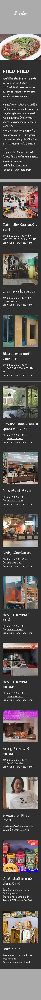

เผ็ดเผ็ด · สาขาราชพฤกษ์ (The Circle)
เว็บเดิมเป็นเทมเพลต Wix เปิดมือถืออืด (10 วิ) เปิดมาเจอลิสต์หลายสาขาเลย ไม่มีหน้าแรกดึงดูด เราทำให้โหลดเร็วขึ้น 3 เท่า เบากว่า 8 เท่า และมีหน้าแรกน่ากิน + เมนู/จองชัด วัดจริงด้วย Google Lighthouse
เวลาโหลดเสร็จ
10.2s → 3.5s
เร็วขึ้น ~3 เท่า
น้ำหนักหน้าเว็บ
1.6MB → 188KB
เบาลง ~8 เท่า
หน้าแรก & เมนู
มีหน้าแรก
เว็บเดิมเปิดมาเจอลิสต์สาขา
